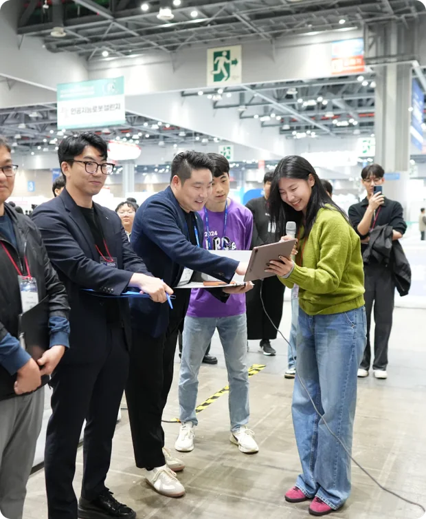
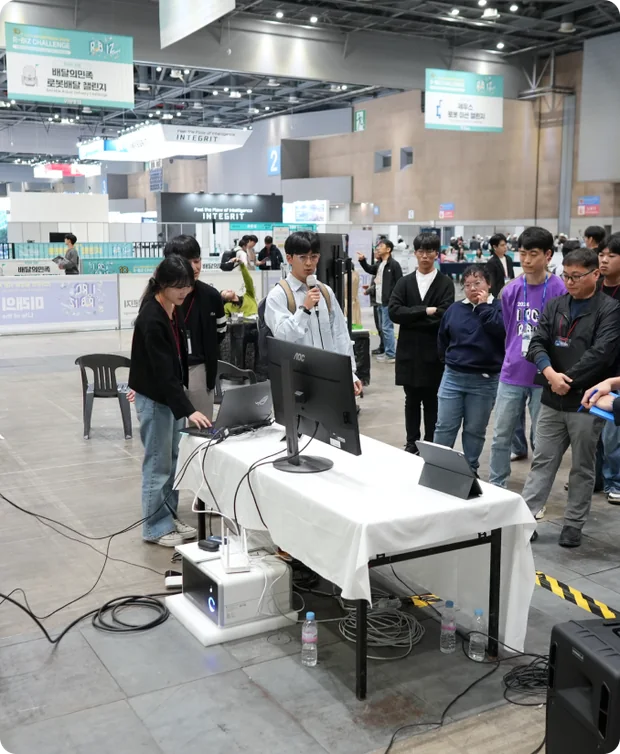
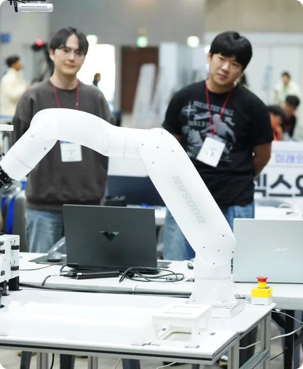
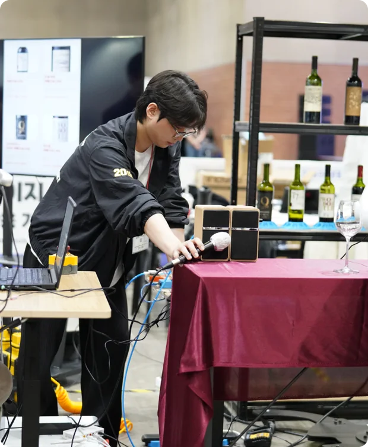
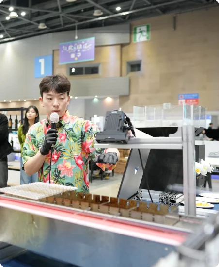
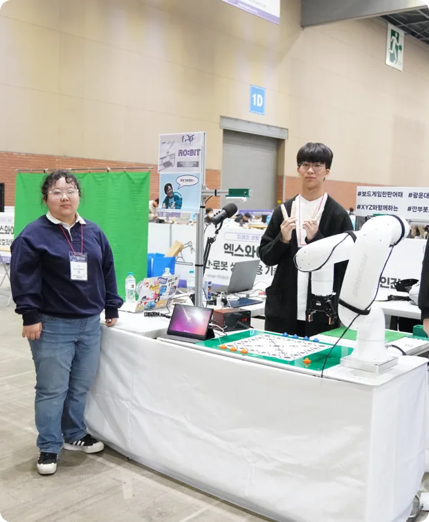
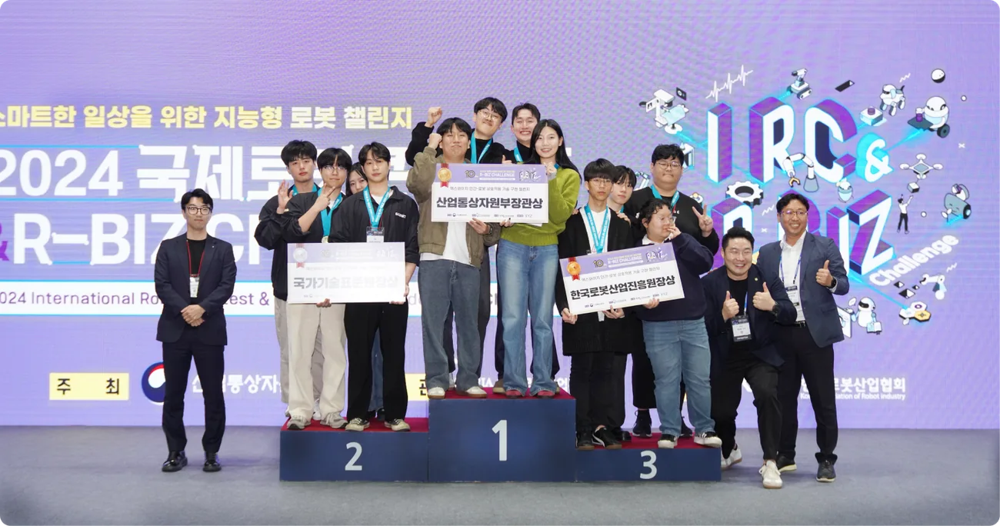
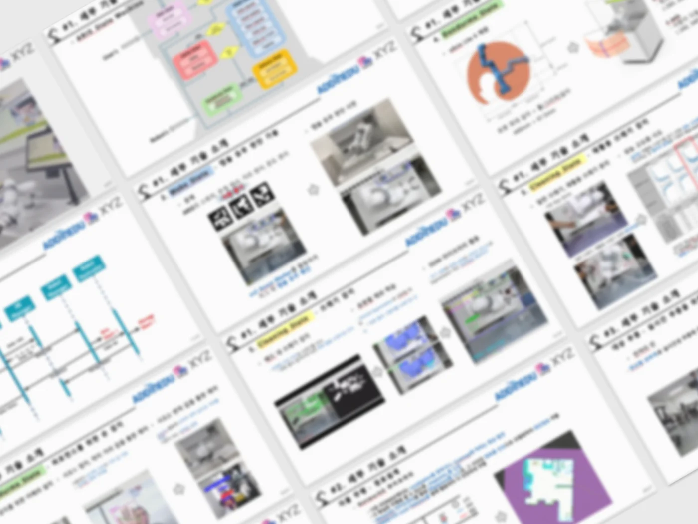
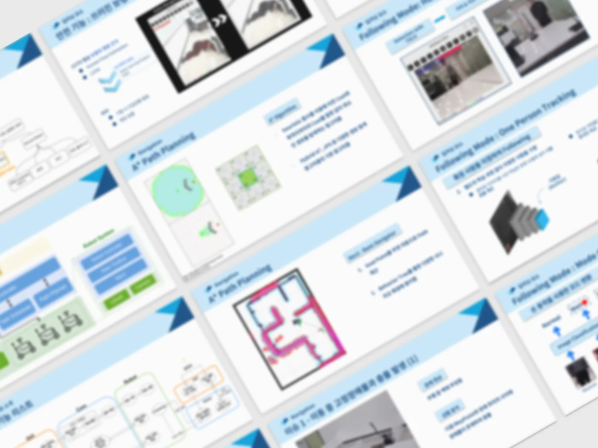

XYZ
실제 바 안에서 바텐더를 대체할 수 있는 서비스 로봇. 고객이 왔을 때 고객이 희망하는 칵테일 자체 제작 및 고객들에게 흥미를 유발하기 위해 음악에 맞게 춤을 출 수 있는 기능 삽입. 앱을 통해 맞춤형 칵테일 제작을 도와줄 수 있으며 인간보다 정교한 맛을 만들 수 있는 솔루션 개발
"눈에 보이는 성과를 가져다주는 XYZ 아카데미의 교육"
경진대회 참가
엑스와이지 인간-로봇 상호작용기술 구현 챌린지

실제 바 안에서 바텐더를 대체할 수 있는 서비스 로봇. 고객이 왔을 때 고객이 희망하는 칵테일 자체 제작 및 고객들에게 흥미를 유발하기 위해 음악에 맞게 춤을 출 수 있는 기능 삽입. 앱을 통해 맞춤형 칵테일 제작을 도와줄 수 있으며 인간보다 정교한 맛을 만들 수 있는 솔루션 개발

'1인크리에이터를 위한 컨텐츠 촬영 협동로봇'이며 인공지능, 영상처리, stt기술을 적극적로 사용해 크리에이터와 상호작용합니다

'로봇팔과 신체 데이터를 활용한 HRI 생활 보조 로봇'입니다. 웨어러블 기기(워치)를 통해 사용자의 신체 데이터로 음료 추천 및 STT/TTS를 통한 HRI 입니다.

'Chat GPT API와 SST/TTS를 이용한 대화를 기반으로 와인을 추천해주고 따라주는 웨이터 로봇' 비전을 통해 사람의 유무, 와인잔 등 여러 상황에 대응하며 공압, 로드셀 등 추가적인 기술을 활용해 와인을 따르고 서빙합니다

로봇팔을 사용하여 아메리칸 타코를 만드는 로봇 키오스크. 다국어 지원, AI 챗봇 주문 추천 서비스, 고기의 퀴숑을 이븐하게 익히기위해 비전 기술 활용하여 타코를 제작합니다

로봇팔 형태의 인공지능 보드게임 로봇. ROS2환경에서 인공지능을 활용하여 게임의 상태를 스스로 분석하고 모션을 실행하며, 사용자와 자연어로 의사소통하며 게임 진행이 가능하도록 만들었습니다

1등 장관상 XYZ
300만원 상금 및 100만원 상당의 상품 지급
2등 국표원장상 Gadget
150만원 상금 및 50만원 상당의 상품 지급
3등 진흥원장상 RO:BIT
100만원 상금 및 30만원 상당의 상품 지급
본선 참가자 전원 : 상품 10만원 상당
PROJECT EXAMPLE ①

PROJECT EXAMPLE ①

“현장에서 직접, 개발 프로젝트의 A to Z까지
경험해본 것 같아 실력이 쑥쑥 늘었어요!”